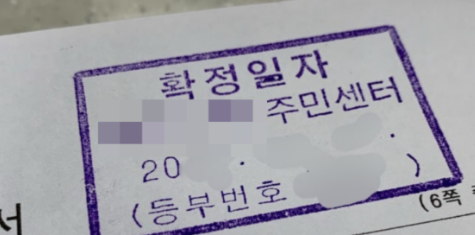

전입신고·대항력·우선변제권과 온라인 신청 절차까지 한 번에 확인

확정일자는 임대차계약서가 특정 날짜에 실제로 존재했다는 사실을 공적으로 인정해 주는 날짜입니다. 전세나 월세 계약서를 작성한 뒤 확정일자를 받으면 계약 체결 시점과 보증금 등 계약 내용을 증명하는 데 도움이 됩니다.
확정일자는 소유권을 이전하거나 임차권을 등기하는 절차는 아닙니다. 하지만 주택이 경매 또는 공매로 넘어가는 상황에서 임차인이 후순위 권리자보다 보증금을 우선해 변제받기 위한 핵심 요건 중 하나입니다.
| 구분 | 전입신고 | 확정일자 |
|---|---|---|
| 의미 | 주민등록상 주소를 새 거주지로 옮기는 신고 | 계약서가 해당 날짜에 존재했다는 사실을 공적으로 인정 |
| 주요 목적 | 주소 변경과 대항요건 마련 | 우선변제권 요건 마련과 계약일자 증명 |
| 처리 장소 | 주민센터 또는 정부24 | 주민센터 등 부여기관 또는 인터넷등기소 |
| 주의사항 | 실제 입주와 신고 시점 확인 | 계약서 내용과 주소가 정확한지 확인 |
대항력은 임차주택의 소유자가 바뀌더라도 임대차관계를 주장할 수 있는 힘을 말합니다. 실제 주택을 인도받고 전입신고를 마쳐 주민등록을 갖추면 법에서 정한 시점부터 대항력이 생길 수 있습니다.
우선변제권은 임차주택이 경매나 공매되는 경우 환가대금에서 후순위권리자보다 먼저 보증금을 변제받을 수 있는 권리입니다. 이를 위해서는 대항요건과 함께 임대차계약서의 확정일자가 중요합니다.
전세 계약뿐 아니라 보증금이 있는 월세 계약도 확정일자를 받아두는 것이 좋습니다. 보증금이 작다고 해서 위험이 없는 것은 아니며, 계약기간 중 임대인의 채무 상황이나 부동산 권리관계가 달라질 수 있습니다.
다가구주택, 다세대주택, 오피스텔은 건물 형태와 실제 주거용 사용 여부에 따라 확인할 사항이 다를 수 있으므로 계약 주소와 호실이 실제 현관 표시, 계약서와 일치하는지 확인하세요.
방문 전 계약서의 임대인과 임차인 정보, 부동산 표시, 보증금과 차임, 계약기간과 서명이 빠짐없이 작성됐는지 확인해야 합니다. 주소가 실제 전입신고할 주소와 다르면 이후 권리관계 확인에서 문제가 생길 수 있습니다.
인터넷등기소의 온라인 확정일자 신청 서비스를 이용하면 방문하지 않고 신청할 수 있습니다. 임대차계약서를 스캔하거나 파일로 준비하고 신청 정보를 입력한 뒤 인증수단을 이용해 전자서명 절차를 진행합니다.
| 확인 항목 | 체크할 내용 | 주의 사례 |
|---|---|---|
| 임대 목적물 | 주소, 동·층·호수 | 실제 입주 호수와 계약서 호수가 다름 |
| 계약 당사자 | 임대인·임차인 이름과 서명 | 소유자와 계약자가 다른데 위임 확인이 없음 |
| 보증금·차임 | 금액과 지급일, 계약금·잔금 | 숫자와 한글 금액이 서로 다름 |
| 계약기간 | 입주일과 종료일 | 잔금일과 실제 인도일이 불분명함 |
| 특약사항 | 수리, 반환, 권리변동 관련 약정 | 구두 약속만 있고 계약서에는 없음 |
확정일자를 늦게 받는다고 계약 자체가 무효가 되는 것은 아닙니다. 다만 그 사이 근저당권이나 압류 등 다른 권리가 먼저 설정되면 경매·공매 배당 순위에서 불리해질 수 있습니다.
계약 후 실제 입주까지 기간이 길다면 계약 당시의 등기사항만 믿지 말고 중도금 지급일과 잔금일에도 다시 확인하는 것이 좋습니다.
기존 계약을 갱신하면서 보증금이 증액되거나 새로운 계약서를 작성했다면 변경된 계약서에도 확정일자가 필요한지 확인해야 합니다. 기존 보증금과 증액된 금액의 보호 시점이 달라질 수 있기 때문입니다.
기존 계약서와 새 계약서를 모두 보관하고 주민센터나 법률 전문가에게 구체적인 처리 방법을 확인하는 것이 안전합니다.
| 구분 | 확인 내용 | 체크 이유 |
|---|---|---|
| 표제부 | 주소, 건물 용도와 호수 | 계약 대상과 실제 주택 일치 여부 |
| 갑구 | 현재 소유자, 압류와 가처분 | 계약 상대방과 소유권 위험 확인 |
| 을구 | 근저당권, 전세권 등 담보권 | 선순위 채권 규모 검토 |
| 접수일자 | 각 권리의 등기 접수 시점 | 권리의 선후관계 판단 |
확정일자는 중요한 보호수단이지만 모든 위험을 없애주지는 않습니다. 집값에 비해 선순위 채권과 임차보증금이 지나치게 많거나 세금 체납, 신탁등기 등 복잡한 권리관계가 있다면 보증금 회수가 어려울 수 있습니다.
계약 전에는 시세와 선순위 채권, 다가구주택의 다른 임차인 보증금 가능성, 임대인 정보와 체납 관련 확인 절차를 함께 살펴보는 것이 좋습니다. 필요하다면 전세보증금 반환보증 가입 가능 여부도 확인하세요.
확정일자뿐 아니라 전입신고, 폐가전 처리와 인터넷 이전설치까지 이사 전후 절차를 빠짐없이 준비해 보세요.
전입신고 신청 방법 확인하기아닙니다. 전입신고는 주민등록상 주소를 옮기는 절차이고, 확정일자는 임대차계약서가 해당 날짜에 존재했다는 사실을 공적으로 인정받는 절차입니다.
주택의 인도와 전입신고로 대항요건을 갖추고, 확정일자까지 받아야 우선변제권을 확보하는 데 도움이 됩니다.
주민센터 등 확정일자 부여기관을 방문하거나 인터넷등기소의 온라인 확정일자 신청 서비스를 이용할 수 있습니다.
보증금이 있는 월세 계약이라면 보증금 보호를 위해 전입신고와 확정일자를 함께 갖추는 것이 좋습니다.
보증금 증액이나 주요 조건 변경으로 새 계약서를 작성했다면 새 계약서의 확정일자 필요 여부를 확인하는 것이 좋습니다.
확정일자는 전세와 월세 보증금을 지키기 위해 반드시 알아두어야 할 절차입니다. 다만 확정일자만 받아두는 것으로 모든 보호가 완성되는 것은 아니며, 실제 입주와 전입신고를 통해 대항요건을 갖추고 계약서의 확정일자까지 준비해야 우선변제권을 갖추는 데 도움이 됩니다.
계약 전에는 등기사항증명서와 시세, 선순위 권리관계를 확인하고 잔금 지급일에도 등기 변동 여부를 다시 살펴보세요. 이사 당일에는 전입신고와 확정일자 처리를 가능한 한 신속하게 마치고 계약서 원본과 이체내역을 안전하게 보관하는 것이 좋습니다.